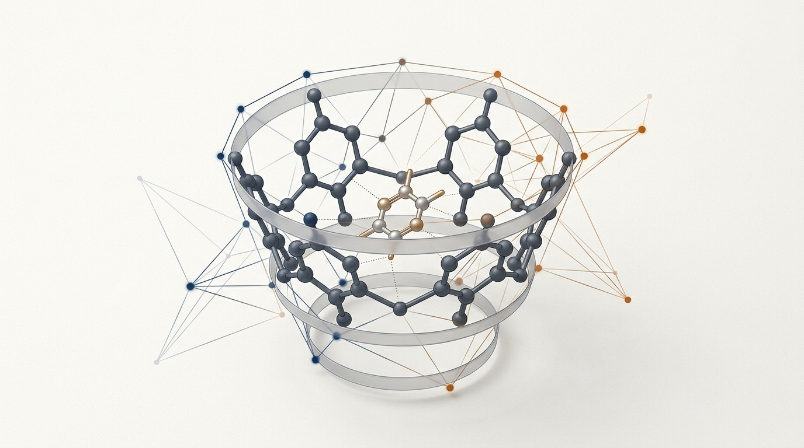

Supramolecular Host–Guest Machine Learning
Built and benchmarked small-sample molecular ML pipelines across 39 calixarene hosts and 8 histone peptide targets—comparing ECFP6 fingerprints (RF/SVM), aligned 3-D CNN/ResNets, and graph neural networks (GCN, AttentiveFP) under strict repeated-holdout and leave-one-out validation, alongside conditional diffusion prototypes for molecular connectivity generation.